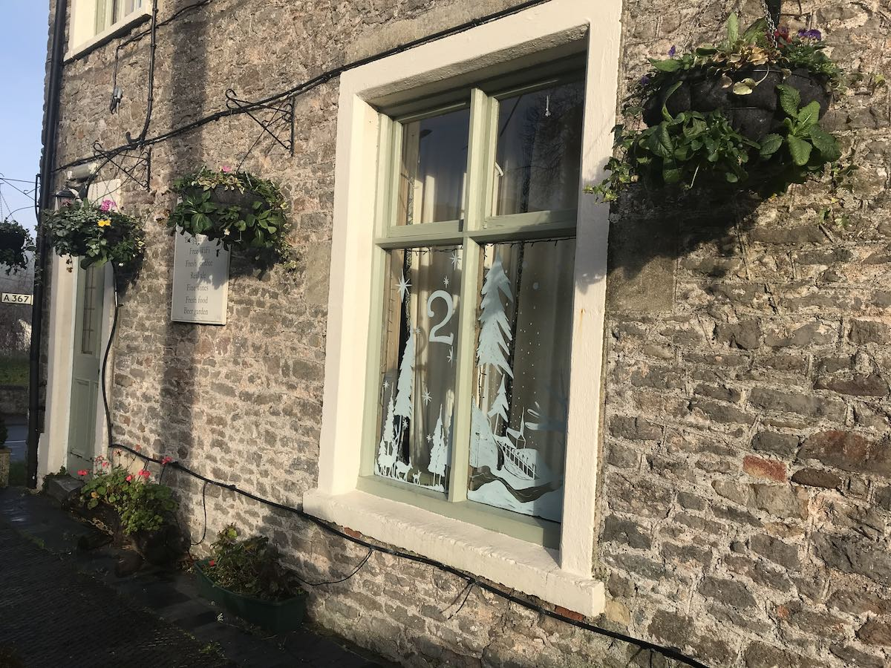

Go hunting for a new Advent Window around Oakhill Village each evening of December, or visit them all at once on the Village Christmas Trail. Check back each day for pictures of the new windows and clues for where to find them.
02 December

Where am I?
"The people walking in darkness have seen a great light, on
this living in the land of the shadow of death a light has dawned."
The Bible (Isaiah 9 v 2)
If you’re looking for light in the darkness this Christmas, if you’re struggling to make ends meet, if you’re lonely or hungry, or you don’t know where to turn; then the church is here for you. We don't mind whether or not you’ve been Christened, what mistakes you’ve made in your life, or what you believe about God; just send us an e-mail or give us a call if we might be able to help.